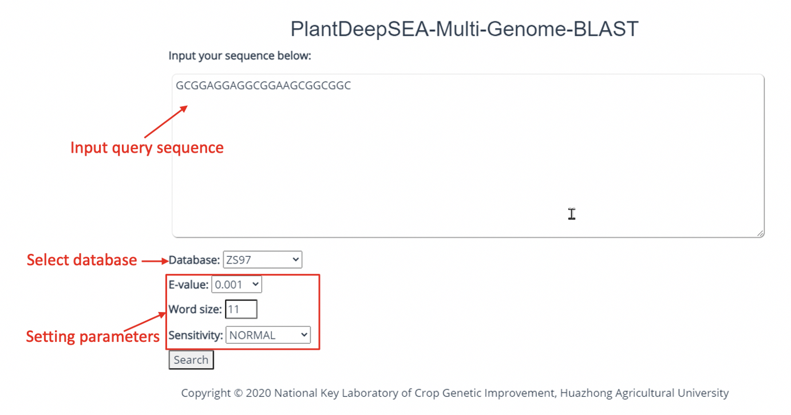
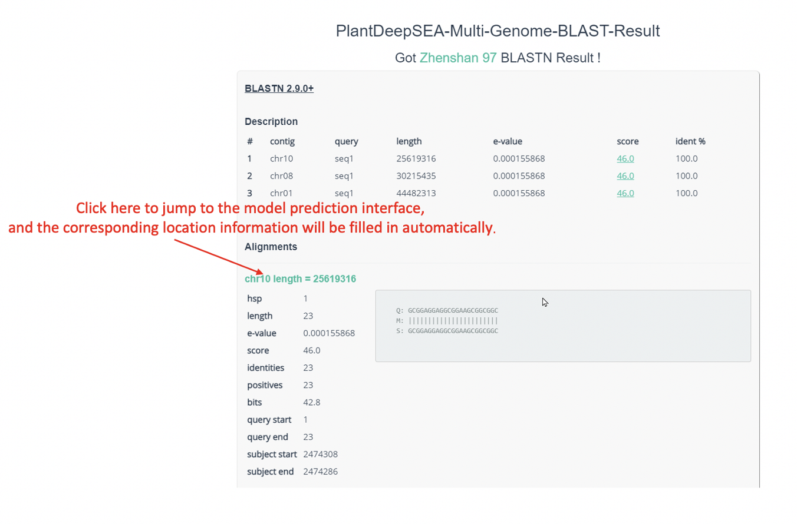
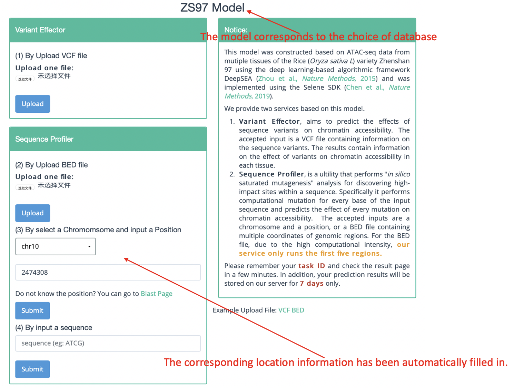

Blast¶
Click the blast button in the main interface to enter the blast (for conservative sequence analysis) page. On this page, you can enter the sequence of interest and select the appropriate database and parameters to query (as shown in the figure below).
In the returned blast result interface, click the corresponding result to jump to the model (same as database) prediction interface, and automatically fill the corresponding position to (3) by select a chromsomeand input a position under the sequence profiler. The user can directly click submit to submit the task for prediction.
 